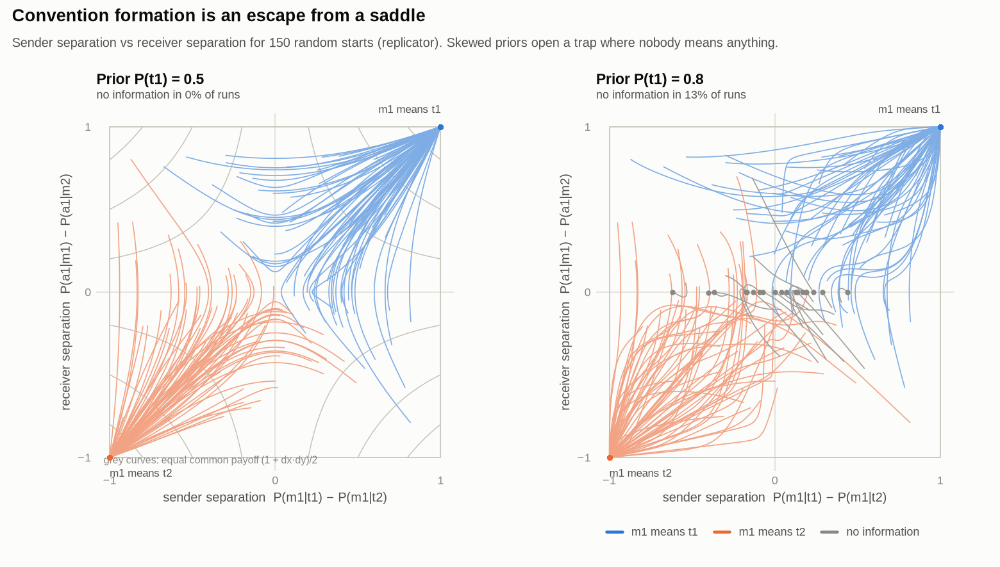
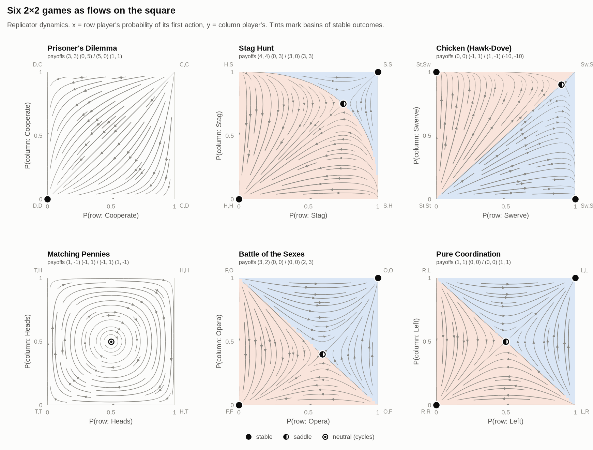
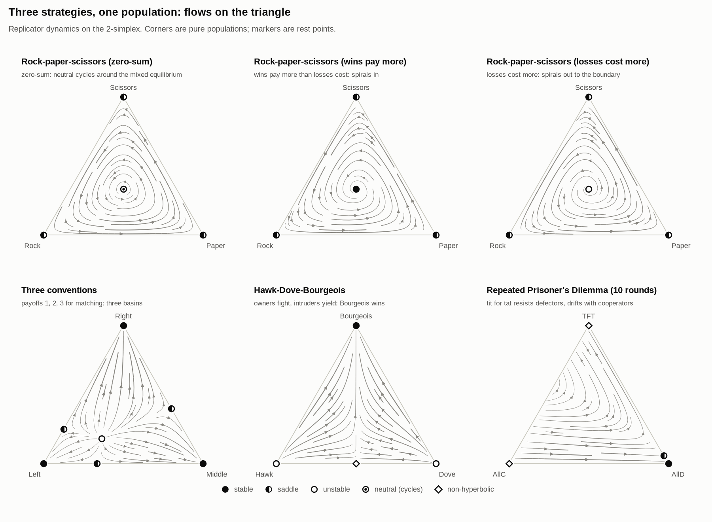
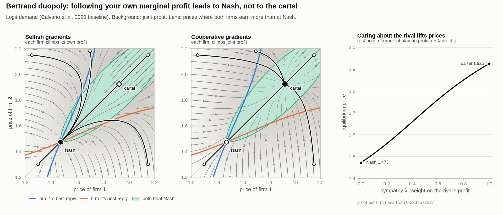

Learning dynamics in games
Phase portraits of play
What happens when every player follows its own first-order signal: the slope of its own payoff with respect to its own strategy? The joint behaviour becomes a flow in strategy space. These pages draw that flow for signaling games, classic normal-form games and duopoly markets, and let you push it around.
- m1 comes to mean t1
- m1 comes to mean t2
- no language forms
Each dot is one sender-receiver pair; position is how differently the sender treats the two states (x) and how differently the receiver reads the two messages (y). Prior 0.75, replicator dynamics.

Signaling games
A four-dimensional flow, taken apart: sender and receiver squares, the meaning plane, a states-to-messages-to-actions diagram and basins of attraction. Includes the pooling trap and cycling handicap signals.
Open the explorer →
2×2 games
Prisoner's Dilemma, Stag Hunt, Chicken, Matching Pennies and your own payoffs. Continuous against discrete learning, optimism, and a clickable atlas of symmetric games.
Open the explorer →
Three strategies
Population games on the triangle: three kinds of rock-paper-scissors, coordination basins, Hawk-Dove-Bourgeois and the repeated Prisoner's Dilemma.
Open the explorer →
Markets
Bertrand and Cournot duopolies: why firms following their marginal profit end at Nash, what sympathy does, and Edgeworth price cycles with capacity limits.
Open the explorer →The first-order signal
Every player holds a mixed strategy and changes it along the gradient of its own expected payoff, treating everyone else as fixed. In a normal-form game that gradient is simply the payoff of each action against the current opponents. The learning rules differ only in how a player turns the signal into a step: multiplicative weights (the replicator dynamics), plain projected gradient ascent, softmax policy gradient, or, for contrast, a smoothed best reply.
Put all players together and you get a vector field on the space of strategy profiles: an adaptive dynamical system. Its rest points include the Nash equilibria, but whether play reaches them, circles them or gets stuck elsewhere is a property of the flow, not of the payoffs alone.
Why signaling games need more than one picture
In a 2×2 game each player's strategy is one number, so the flow lives on a square. In a sender-receiver game with two states, two messages and two actions, the sender has one probability per state and the receiver one per message: four numbers. The explorer shows that four-dimensional flow through linked views: the two squares (each with the landscape its agent currently sees), a two-dimensional "meaning plane" in which convention formation is escape from a saddle, and basin slices of the full flow.
Gallery
Static figures generated by scripts/make_figures.py from the Python package in this repository.
Use the models in Python
from gamevis import signaling as sg game = sg.lewis(2, prior=0.8) # Lewis game, skewed priors shares = sg.basin_fractions(game, rule="replicator") # m1=t1, m1=t2, no information, cycling print(shares) # about [0.44, 0.44, 0.11, 0.00]